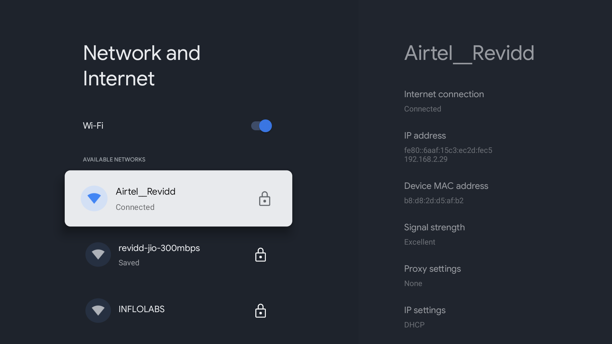
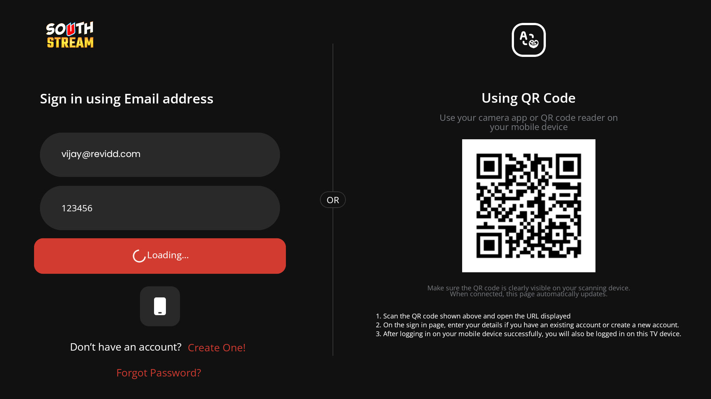
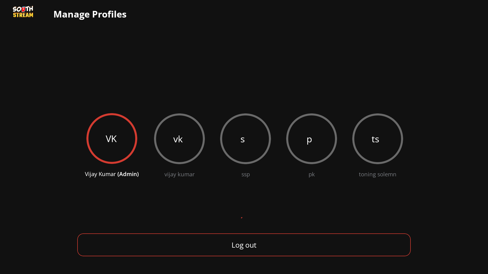
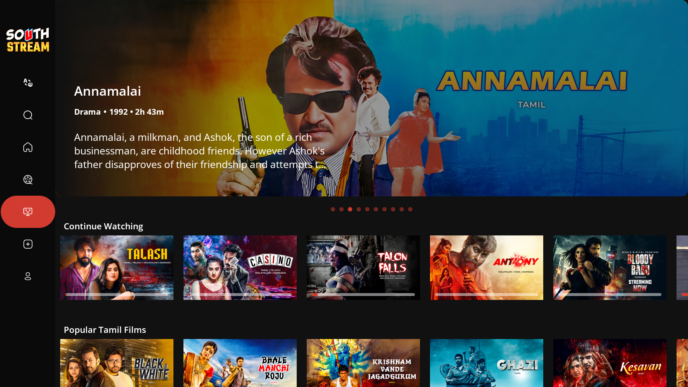
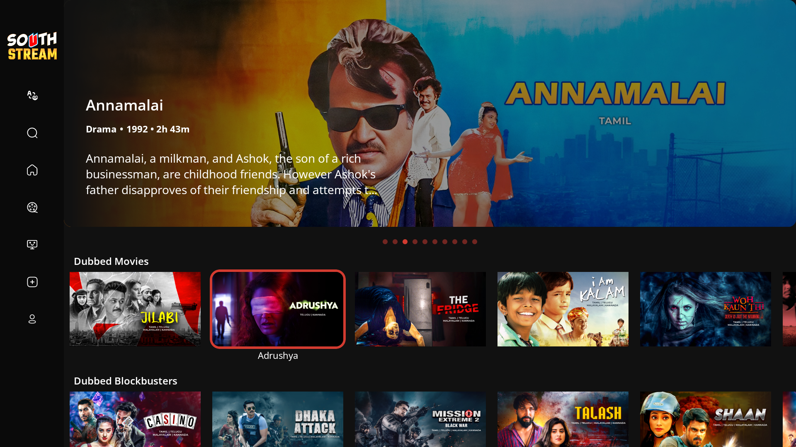
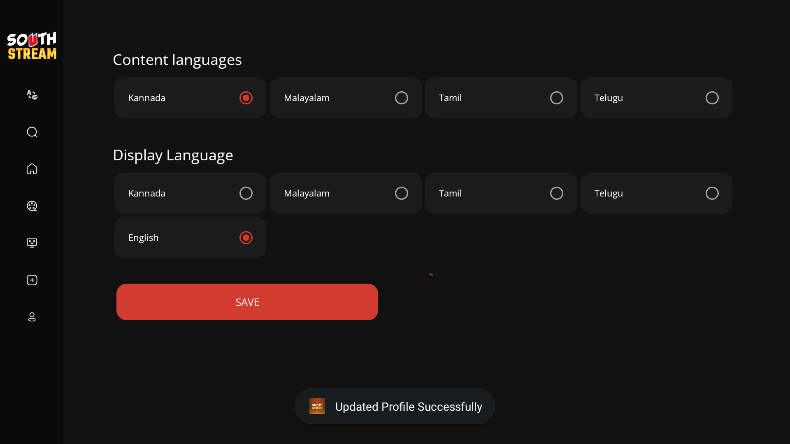
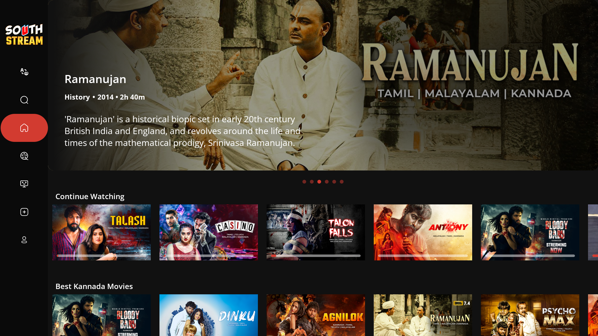
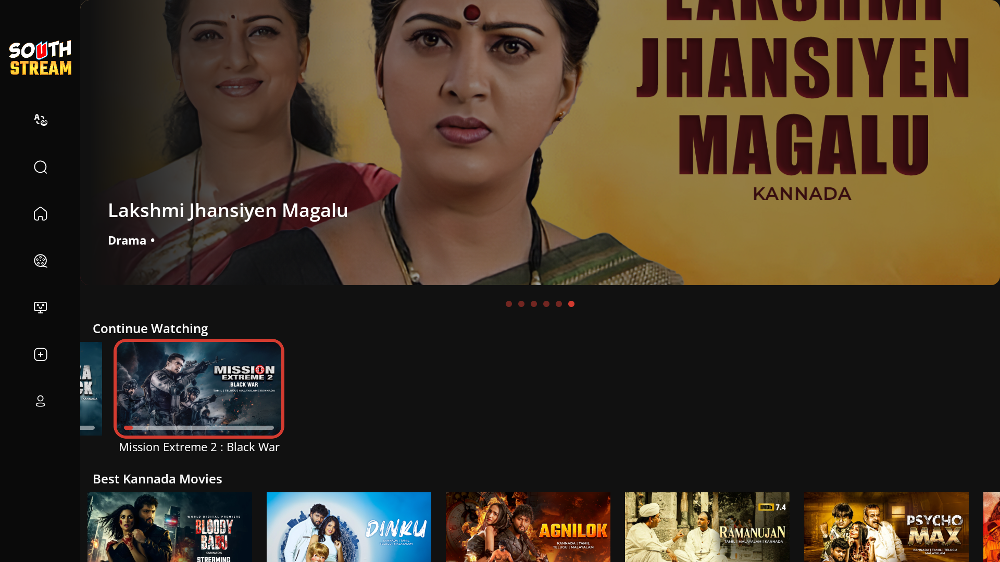
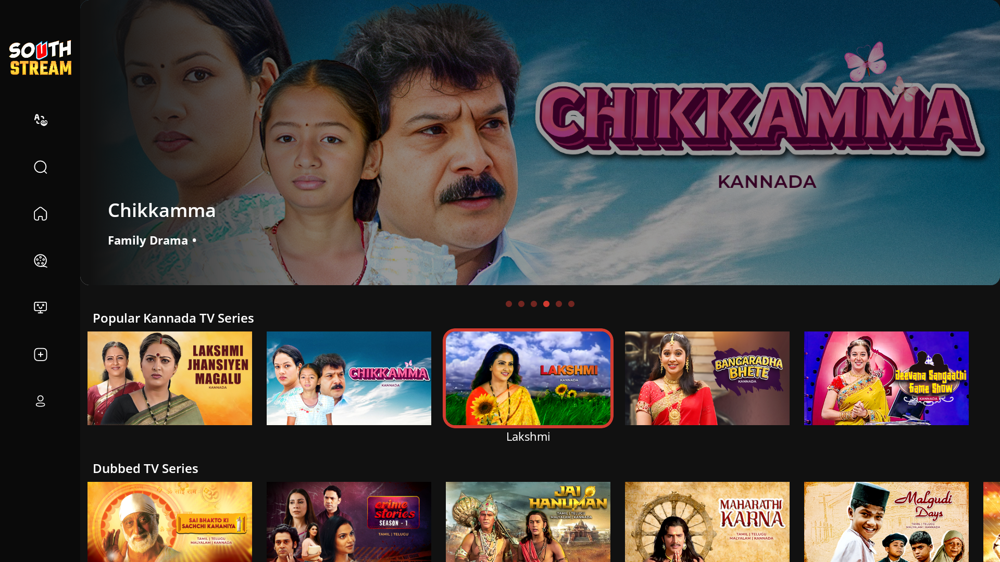
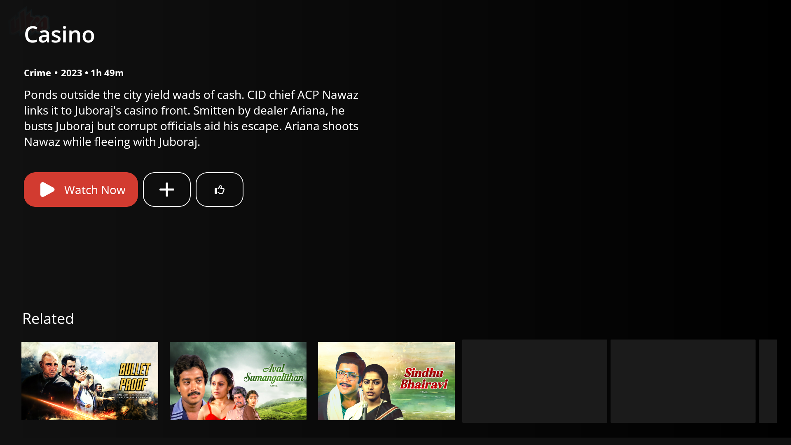

SouthStream crashed twice within the first 9 minutes of manual testing. Both are React Native crashes — different root causes. App went completely offline at 16:47. This app is not stable for users.
💥 Crashes Detected
App was running in task t765. At 16:40:08 the activity switched to a new task (t770) and memory dropped from 170MB → 109MB — clear sign of a full app restart after crash.
Fix: Check for unhandled promise rejections and add error boundaries around native module calls. Enable crash reporting (Sentry/Firebase Crashlytics) to get the full JS stack trace.
App was running in task t770 (post-crash restart). Crashed again at 16:42:05. Activity switched to new task t771, memory dropped from 240MB → 107MB.
Fix: Add cleanup in
useEffect return function to cancel all shared value animations when a component unmounts. Use cancelAnimation(sharedValue) from react-native-reanimated before unmount.
⚡ Performance During Session
Memory (RSS)
Frame Drops (Janky Frames %)
100% at crash moments = all frames dropped (app frozen). Legacy metric consistently 34–84% — severe rendering issues.
🕐 Session Timeline
📸 Screenshots (16 captured, every 30s)

Settings screen | MEM: 145MB | 5.5%

SouthStream open | MEM: 147MB | 5.7%

Manual testing | MEM: 166MB | 4.9%
After CRASH #1 | MEM: 107MB | 100%

App restarted | MEM: 203MB | 16.5%

Memory peak | MEM: 249MB | 14.4%

Pre-crash #2 | MEM: 235MB | 11.7%

After CRASH #2 | MEM: 105MB | 100%

App restarted | MEM: 186MB | 14.0%

Stable | MEM: 188MB | 9.7%
Stable | MEM: 226MB | 9.2%

Stable | MEM: 221MB | 8.6%
Stable | MEM: 202MB | 7.6%

Stable | MEM: 213MB | 5.9%
Stable | MEM: 230MB | 7.5%

Last capture | MEM: 236MB | 10.6%
🐛 Bugs to Fix
🎬 Screen Recordings (3 Segments)
Segment 1 — 16:38 to 16:41
App opens → manual testing → Crash #1 at 16:39:40
10 MB | Contains Crash #1 — mqt_native_modules Fatal Exception
Segment 2 — 16:41 to 16:44
App restart → testing → Crash #2 at 16:42:05
6.4 MB | Contains Crash #2 — Reanimated unmounted view
Segment 3 — 16:44 to 16:47
App restart → stable session → TV goes offline
7.4 MB | Stable run, no crash — TV disconnected at end